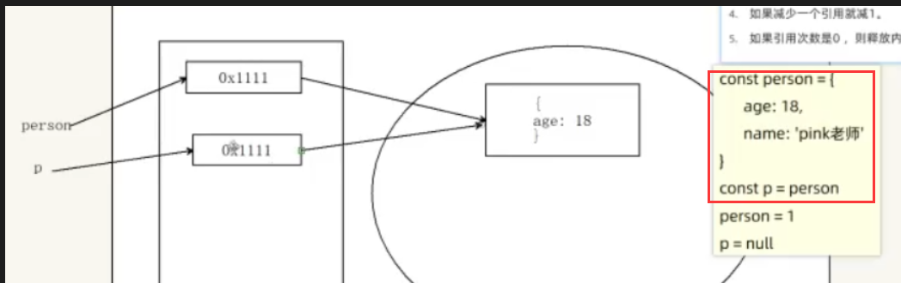
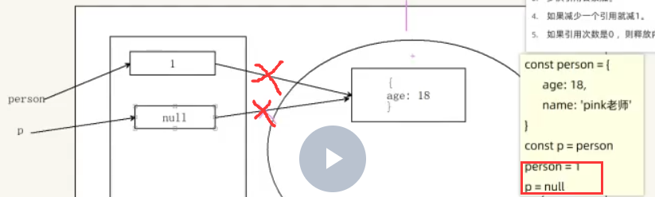
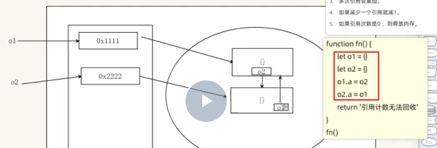
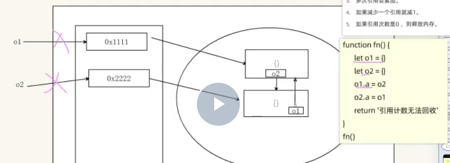

图1： person的地址和p的地址都指向堆那个年龄 所以被引用次数当前是2

图2： person被简单数据类型1赋值了 在堆中的地址变成了1 所以后面不指向堆里那个地址了
p本来也指向地址，后来被简单数据类型null赋值了 也不指向堆里那个地址了
所以当前引用次数为2-2=0
所以要回收了
图3 
此时是互相指向
图4 
局部变量 每次执行完就被回收 所以 o1和o2的那两条前面被回收
o1指向o2 引用是1次 o2指向o1 引用是1次 , 2次
所以他俩不能被销毁 因为引用次数不是0次
一般在栈中的简单类型 使用完会被销毁 但是在堆中的复杂引用类型一般不会被销毁